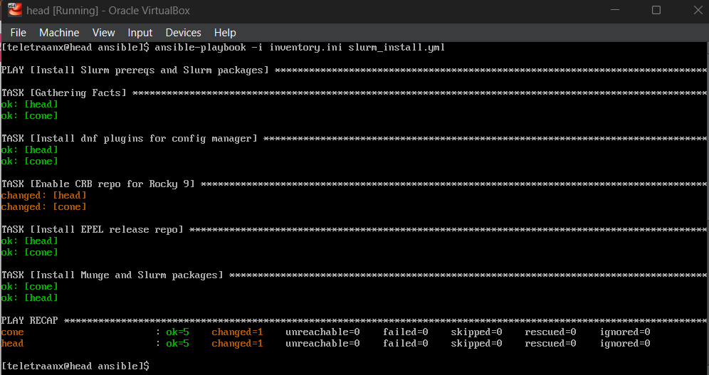
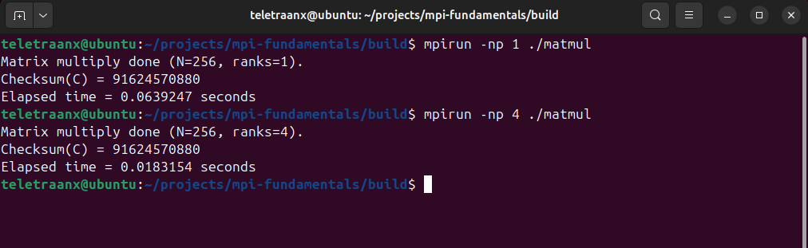
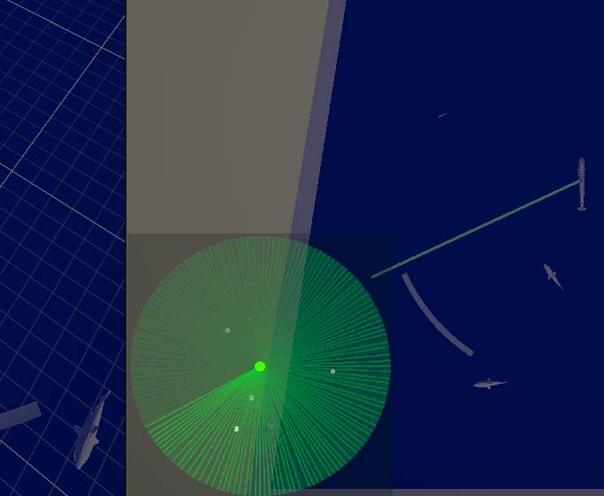
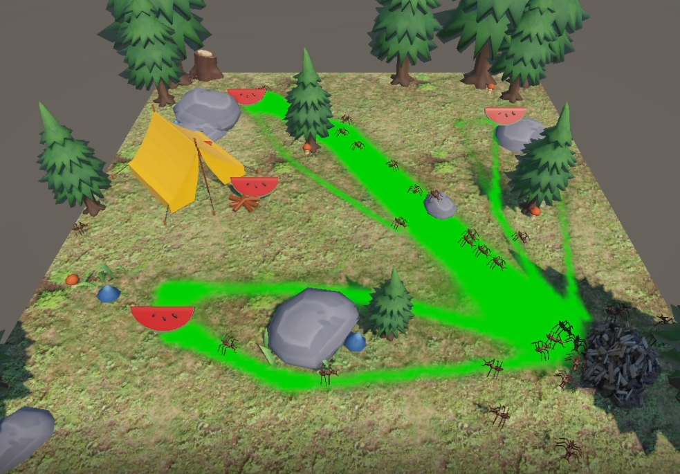
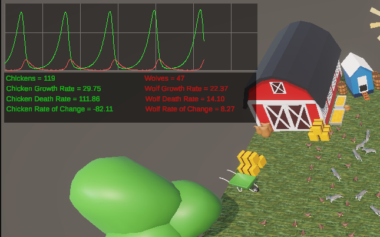

Assembly
Embedded Systems

High-Performance Computing

Linux HPC Cluster: Slurm, Ansible Automation, and MPI Operations
Designed and automated a small-scale Linux HPC cluster to simulate real production operations, including Slurm scheduling, Ansible-driven configuration management, MPI workload validation, and failure recovery.
High-Performance Computing
Distributed-Memory Parallel Programming with MPI (C++)
Implemented MPI-based parallel programs in C++ demonstrating distributed computation, collective communication, and basic performance scaling.
High-Performance ComputingModeling & Simulation

Active Sonar Simulation
Unity simulation of active searchlight sonar.
Modeling & Simulation
Ant Pheromone Simulator
Unity simulation of ant foraging and pheromones.
Modeling & Simulation
Lotka-Volterra Simulation
Unity simulation of the Lotka-Volterra predator-prey model.
Modeling & Simulation